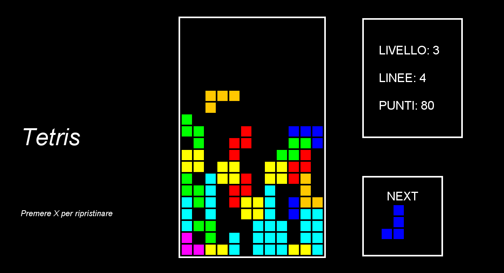

A Story
...CUBICIOUS!
Tetris, born from the genius of Alexey Pajitnov in 1984, is an icon of video games. This compelling puzzle game originated in the Soviet Union, where Pajitnov, working at the USSR Academy of Sciences, created the game in his spare time. The name "Tetris" comes from the word "tetromino," the geometric shape composed of four squares that make up the game tiles.
How Does It Work?
Tetrominos fall from the top of the screen one at a time, and the player can rotate and move them laterally as they fall. The goal is to place the tetrominos in such a way as to create complete horizontal lines without any gaps. When a line is completed, it disappears from the grid, and the player earns points. As lines are cleared, the difficulty increases as the tetrominos fall faster and faster. The game ends when the tetrominos reach the top of the grid and there is no more space to place them.

My First Java Game!
My first Java game project was a significant moment in my learning journey. Through this project, I had my first hands-on experiences with fundamental concepts like the game loop and the use of threads. I faced challenges and learned many valuable lessons that helped me grow as a developer. It was an exciting time, made possible with the help and support of a YouTuber named "RyiSnow". This experience inspired me to continue exploring the world of game development and constantly improve my skills.
